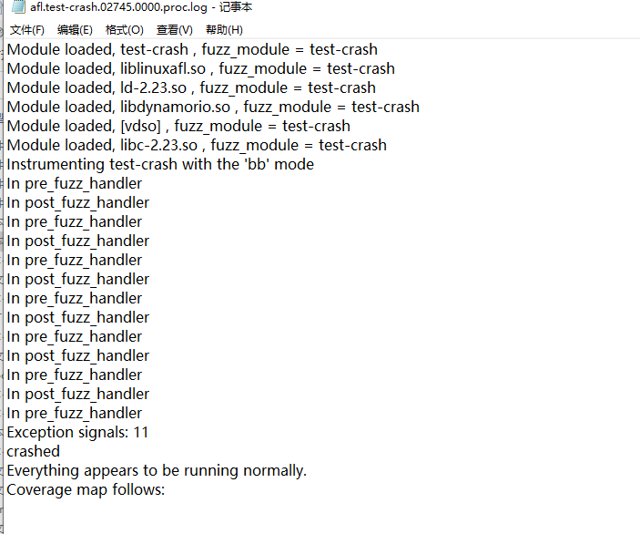
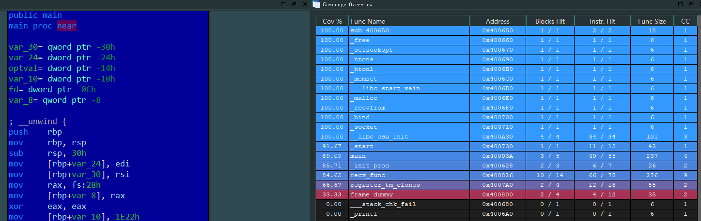
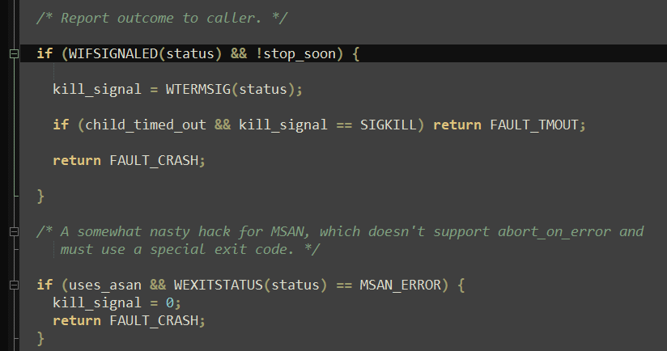
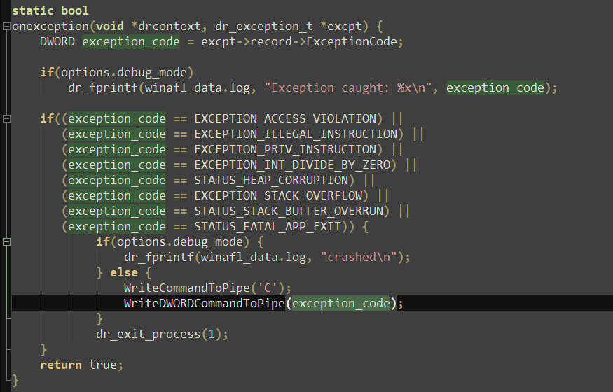
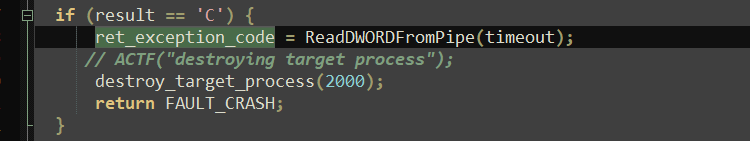
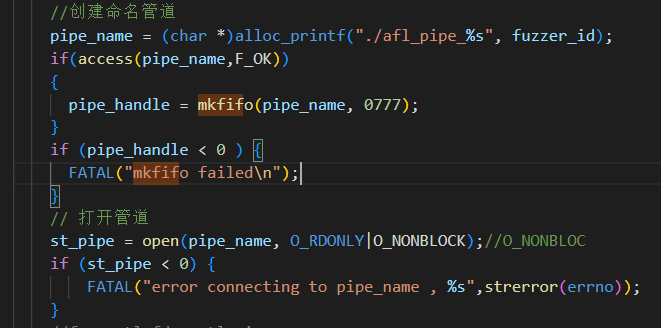
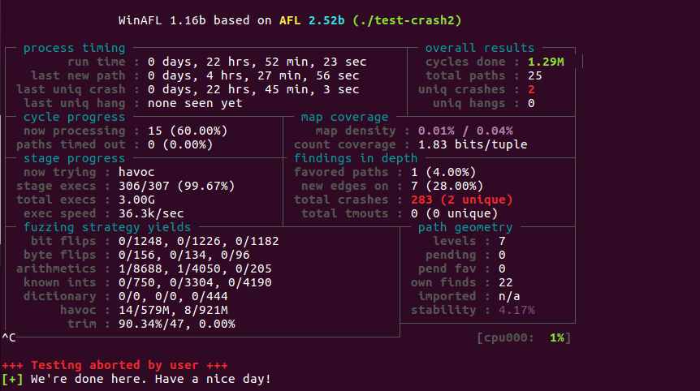
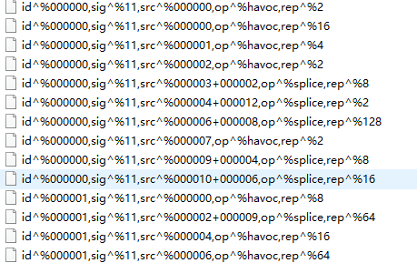

fuzz修改
条评论修改 winAFL - AFL fuzz 网络服务程序
winAFL 提供的黑盒的 fuzz ，结合它的 custom_net_fuzzer 可以 fuzz 网络服务程序。
AFL 主要是 fuzz 开源的，对于黑盒采用的是 qemu 模式。
我的需求是能在目标设备上运行，目标设置指一些网络设备，底层是 Linux 的系统。而且，这些设备的服务程序，依赖硬件支持，很难在外面的虚拟环境中模拟起来。不像是一些小型的路由器，httpsd 服务可以用 qemu 模拟。
这里，我主要是使用 winAFL 的代码，将所有功能用 Linux C 重写。
winAFL 里对覆盖率的获取使用了 DynamoRIO ，这个工具有 Linux 版本，拿过来用就可以。
liblinuxafl.so
核心的 winafl.dll ，这个代码需要大改。windows 上对于程序的异常状态，有处理异常相关的函数来进行。Linux 上的异常主要是信号，同样的也有相对于的信号处理函数。
winafl.dll 最终改成 liblinuxafl.so 。用测试模式，在目标设备的环境下用测试模式运行一下，如下图。

这说明，修改后的 liblinuxafl.so 功能是正确的。
再来跑一下覆盖率，用 IDA 安装上插件 lighthouse ，把覆盖率文件导入进去，如图。

fuzz 主体程序修改
afl
fuzz 的主体程序，改动的地方也不少。主要是通信的问题。
阅读 afl 的源码，可以知道它的通信采用了 pipe ，进行匿名管道通信。因为，它没有借助外面的程序来做覆盖率的计算。afl-fuzz 首先 fork 一个 server ，然后从 server 端再次 fork 子程序， server 和子进程通信。
linux 下的 pipe 是半双工的，所以创建了 2 个 pipe。 对于进程异常的处理，用 waitpid 来做。具体的状态交给 WIFSIGNALED，WEXITSTATUS 等来处理。

winafl
winafl 则是采用了 Createprocess ，通信使用了 CreateNamedPipe 。因为 winafl 调用了 DynamoRIO 来计算覆盖率，通信是跨进程的，所以创建命名管道来通信。与 linux 最大的不同就是 windows 下的管道可以是全双工的。
子进程的状态监控由 winafl.dll 代码的来实现，它调用了 DynamoRIO 提供的 API，当出现崩溃时就向管道写入字符 ‘C’，并把错误的消息也写入管道。

然后主进程读取管道的数据，如果是 ‘C’ 的话，就读出异常消息，杀死崩溃的进程，返回 crash。

fuzz
由于我的程序要在 linux 上跑，所以没有全双工的管道。那么，跨进程通信我只能用命名管道。我这里只使用了一个命名管道，主要用来处理崩溃。

当进程异常时，也需要使用 waitpid 对进程进行处理。虽然我也用了 DynamroRIO 来获取进程的状态。但是，子进程崩溃了并不会自己退出，还是需要我去处理错误，回收资源。不然它就是一个僵尸进程，一直在那挂着。
测试
最后我写了一个带2处不同崩溃网络测试程序，来试试我改完的这个fuzz。

可以跑出崩溃，就是速度非常快。多次反复测试，得到的 crash 样本都是信号 11 ，说明 crash 也是正确抓到了的。
